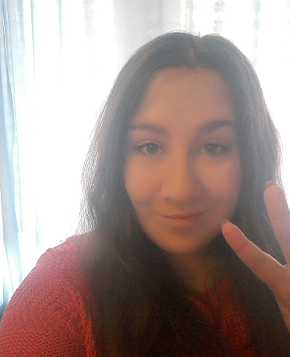

HEJ, nazywam się Kamila. Mam 22 lata i studiuję informatykę na Uniwersytecie Jagiellońskim.
Mam zielone oczy i codziennie u mnie na twarzy widnieje szeroki uśmiech, ale zdarzają się też dni kiedy humor mi nie dopisuje.
Jestem człowiekiem spokojnym, otwartym i szczerym. Ale jak każdy człowiek posiadam również wady.
Jedną z nich jest niestety lenistwo ;-).
Jestem zabawną i komunikatywną osobą. Myślę, że potrafiłabym zachować się w każdej sytuacji.
Wiem, iż aby przetrwać w życiu muszę zdobyć wykształcenie, dlatego nigdy się nie poddaję, zawsze dążę do celu nawet w trudnych sytuacjach!